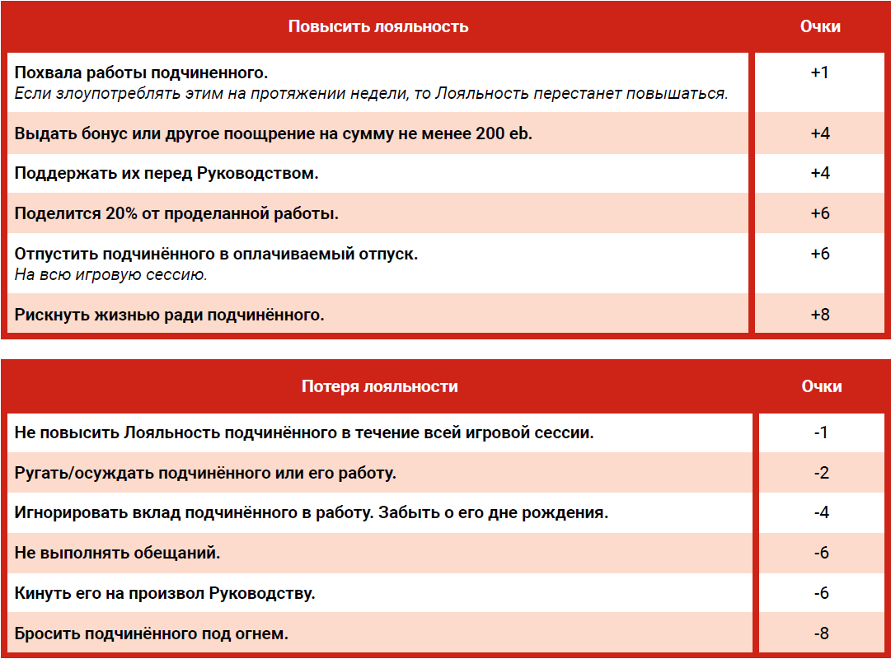
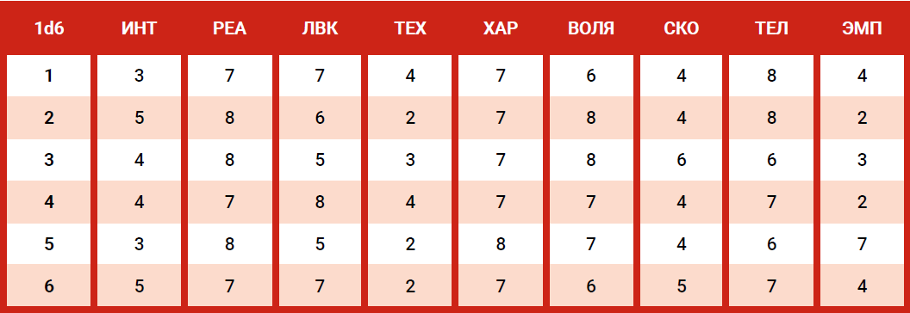
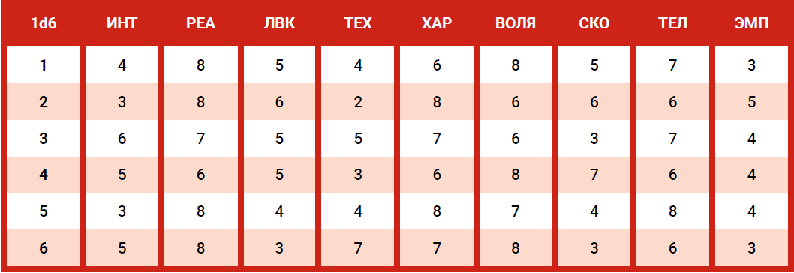
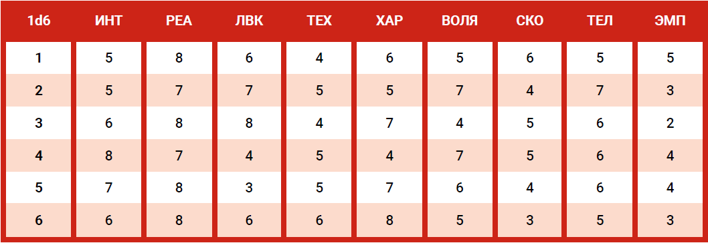
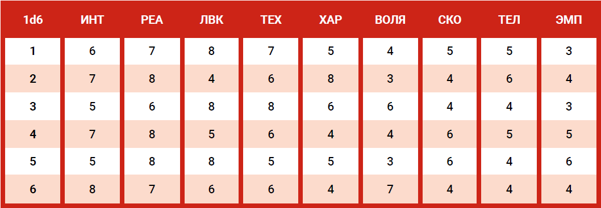
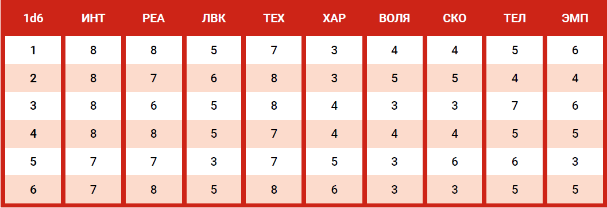

"Если хочешь успеха в мире Неокорпораций, ты должен помнить правило номер
один: оставайся голодным. Джасинда Идальго и Артём Соколов не стали
почивать на лаврах. Проводи сделки, торгуй. А если кто-нибудь попытается тебе
помешать? Сломай их. А если нельзя? Найди возможность. Делай все, что
потребуется. Всегда думай как погубить всех, кого встретишь. Это и есть
корпоративный путь. Держи свои лучшие ресурсы рядом и убедись, что они знают,
что ты на пути к вершине. И если им это по зубам, то пусть составят тебе компанию."
— Чандра Мишра, исполнительный директор Руклин Аугментикс
Как и настоящий корпоративный руководитель, Корпорат создает команду, члены которой
помогают ему достичь своих целей, независимо от того, законно это или нет, моральный дух
позволяет. Ролевая способность Корпората - "Командная Работа".
Вы Exec, что является дословно “менеджер”, но не тот, что по продажам, а управляющий.
Это руководитель среднего звена, с подчиненными.
🔴 На 1 ранге, в качестве подарка вам предоставляется костюм в стиле “Businesswear“,
состоящий из пиджака, верха, штанов и обуви, который идентифицирует вас, как члена бизнес-элиты.
Корпорат не может перепродать их, не вызвав подозрений.
🔴 На 2 ранге, вам предоставляется доступ к одной из корпоративных квартир своей компании.
До тех пор, пока вы остаетесь членом этой корпорации, вы можете жить там без арендной платы или каких-либо других платежей.
При этом корпорат должен каждый месяц отдельно покупать свой стиль жизни.
Если исполнитель переходит в другую корпорацию, они сделают ему такое же предложение и даже оплатят переезд его и всех его вещей в новую квартиру.
🔴 На 7 ранге, корпоративное жилье улучшается до дома в Бивервилле, в Представительской Зоне.
🔴 На 10 ранге, корпоративное жилье значительно улучшается,
вплоть до особняка в Бивервилле в представительской зоне или роскошного пентхауса в корпоративной зоне.
🔴 На 6 ранге, корпорат получает покрытие Trauma Team Серебряного уровня, ежемесячно
оплачиваемое его корпорацией. Если исполнительный директор переходит в другую
корпорацию, она сделает ему такое же предложение.
🔴 На 8 ранге, страховка улучшается до эксклюзивного Представительского уровня.
🔴 На 3 ранге, у вас появляется подчинённый.
🔴 На 5 и 9 ранге еще один дополнительный подчинённый, и того на 9 ранге максимум 3 подчиненных.
Подчинённые выбираются из специальной таблицы в зависимости от должности.
Корпорат выбирает, тип подчиненного который ему требуется, но СТАТы подчиненного, которого нанимает HR,
определяется проверкой по соответствующей таблице.
Несмотря на то, что они устроены так же, как и Персонажи Игроков, у них есть несколько
отличий:
Их навыки нельзя повысить. Их ПЗ определяются и восстанавливаются так же, как и у
игроков.
Ими управляет ГМ, а их готовность выполнять приказы зависит от их Лояльности и
возможности сделать проверку на Лояльность.
Из Брони, они могут носить только Лёгкую Бронезащиту. Политика компании.
🔴 Потеря Подчиненного: если вы потеряли подчинённого, отдел кадров забирает всё его
снаряжение и во время следующей игровой сессии предоставляет нового.
Этот "новый наемник" имеет новые СТАТы, но его стартовая Лояльность снижена до 1 (он слышал о том, что произошло).
Кроме того, это будет стоить Корпорату 200 eb в качестве "платы за наем" (взятка) HRу.
🔴 Лояльность: несмотря на то что подчиненные работают на Корпу, они не безвольные рабы.
Они выполняют поставленные перед ними задачи, основанные на их лояльности (или от премии которую он им подпишет).
Лояльность может менятся. Корпорат должен стараться (во время каждой игровой сессии) сделать всё,
чтобы она росла, а не падала.
Максимальная лояльность между игровыми сессиями 10, но во время игровой сессии Лояльность не имеет ограничений.
🔴 Сохранение Лояльности: когда Корпорат дает поручение своему подчиненному,
ГМ бросает 1d6 в соответствии с текущей Лояльностью этого подчиненного.
Если бросок провален, то подчинённый может отказаться выполнять поручение,
провалить его или иным образом саботировать.
Если Лояльность опускается до 0 или ниже, подчинённый постарается подставить вас.
Если под конец сессии у подчиненного Лояльность ниже 0, он жалуется в отдел кадров и либо его переводят,
либо он увольняется, получив отказ, в зависимости от прихоти отдела кадров.
В любом случае, он уходит. Смотри чуть выше раздел "Потеря подчинённого".
Лояльность

Работа: Определитесь, в чём будет заключаться работа подчиненного.
Вы также можете придумать для него прикрытие.
Возможно вам не хотелось бы, чтобы другие узнали,
что у вас в штате есть специалист для тайных операций или Нетраннер.
СТАТы: Бросьте 1d6 и перепишите все значения из соответствующей строки.
Не забудьте рассчитать их значения ПЗ, Смертельного Ранения и СпасБросока от смерти.
ЭМП не надо снижать из-за Потерь Человечества от Киберимплантов, это уже учтено.
Также перепишите их навыки.
Навыки, кибероимпланты и снаряжение: Запишите навыки, кибероборудование и
снаряжение члена вашей команды. Это стандартные пакеты, предоставляемые им
компанией.
Начальная лояльность: Бросьте 1d6 и добавьте 1. Это начальная лояльность члена вашей команды.
Телохранитель

Прикрытие: Личный Тренер, Эскорт Истинная Работа: Защищает вас в опасных ситуациях Навыки на +2: Концентрация, Общение, Образование, Первая Помощь, Проницательность, Владение языками (Уличный Слeнг), Знание Местности (Свой Район), Убеждение, Скрытность. Навыки на +4: Атлетика, Уклонение, Допрос, Внимательность, Сопротивление пыткам/Наркотикам, Тактика. Навыки на +6: Пистолеты, Рукопашный бой Киберимпланты: Повышенные Антитела, Подкожная Броня (ОС 11), Набор Кибераудио, Встроенный Агент, Трекер маячка. Снаряжение: Агент, Лёгкая Бронезащита (ОС 11), Очень тяжелый Пистолет, Стандартные патроны для ОТ Пистолета х50.
Оперативник под Прикрытием

Прикрытие: Личный помощник, Стилист Истинная Работа: Делает за вас грязную работу. Навыки на +2: Атлетика, Рукопашный бой, Концетрация, Общение, Образование, Первая Помощь, Владение языками (Уличный Слeнг), Знание Местности (Свой Район), Внимательность, Убеждение. Навыки на +4: Подкуп, Бюрократия, Бизнес, Уклонение, Проницательность, Взлом Замков, Уличное Чутьё, Торговля, Гардероб и Стиль. Навыки на +6: Пистолеты, Скрытность. Киберимпланты: Два сопряженных Кибер-глаза с УФ/ИК Зрением, Сдвиг цвета, Кибер-рука с “Рукохватом”, Выкидным оружием дальнего боя (Очень Тяжелый пистолет), покрытие Realskinn. Снаряжение: Агент, лёгкая бронезащита (ОС 11), Очень Тяжелый пистолет, Стандартные патроны для ОТ Пистолета х50.
Водитель

Прикрытие: Лакей, Личный водитель Истинная Работа: Водит, пилотирует и управляет командным ТС. Навыки на +2: Атлетика, Концентрация, Общение, Образование, Первая Помощь, Проницательность, Владение языками (Уличный Слeнг), Знание Местности (Свой Район), Внимательность, Убеждение. Навыки на +4: Рукопашный бой, Выносливость, Уклонение, Автомеханик, Пилотирование, Судоходство, Судоремонт, Скрытность, Следопыт. Навыки на +6: Вождение, Пистолеты. Киберимпланты: Имплант Радар/Сонар, Набор Кибераудио, Встроенный Агент, Трекер маячка,Радар-Детектор. Снаряжение: Лёгкая Бронезащита (ОС 11), Очень Тяжелый пистолет, Автомобиль с улучшенными сиденьями, Базовые патроны для ОТ Пистолета х50.
Нетраннер

Прикрытие: IT-шник, Исследователь Истинная Работа: Нетраннинг и сбор информации. Навыки на +2: Интерфейс (Ролевая Способность Нетраннера), Атлетика, Рукопашный бой, Концетрация, Общение, Уклонение, Первая Помощь, Проницательность, Владение языками (Уличный Слeнг), Знание Местности (Свой Район), Внимательность, Убеждение. Навыки на +4: Техника, Криптография, Кибертехника, Образование, Электроника/Безопасность (х2), Фальсификация, Поиск Информации, Пистолеты, Скрытность. Киберимпланты: Нейролинк, Разъём щепок, Регулятор Боли, Личный порт, Кибер-глаза с AR. Снаряжение: Агент, Лёгкая Бронезащита (ОС11), Кибердека (7 слотов: Меч, Меч, Убийца, Червь, Червь, Доспехи), Очень Тяжелый пистолет, Стандартные патроны для ОТ Пистолета х50.
Техник

Прикрытие: IT-шник, Стажер Истинная Работа: Ремонт оружия и снаряжения. Навыки на +2: Атлетика, Рукопашный бой, Концетрация, Общение, Уклонение, Первая Помощь, Проницательность, Владение языками (Уличный Слeнг), Знание Местности (Свой Район), Внимательность, Убеждение, Скрытность. Навыки на +4: Образование, Пистолеты, Оружейник (x2). Навыки на +6: Техника, Кибертехника, Электроника/Безопасность (х2). Киберимпланты: Инструменты в руке, Набор Кибераудио, Встроенный Агент, Детектор Жучков, Диктофон. Снаряжение: Лёгкая Бронезащита (ОС 11), Очень Тяжелый пистолет, Стандартные патроны для ОТ Пистолета х50.